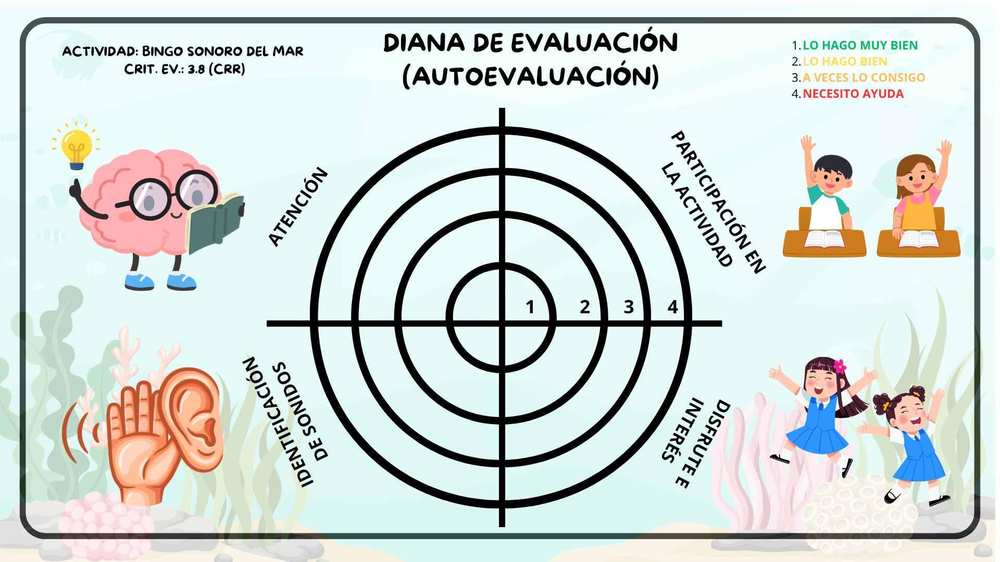
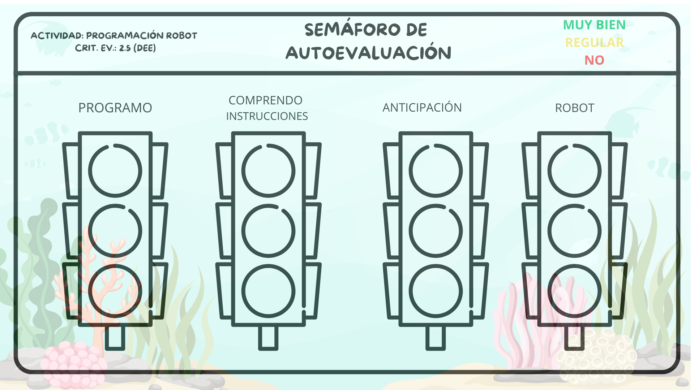

EVALUACIÓN
Como bien sabemos la evaluación es un aspecto fundamental en el proceso de enseñanza-aprendizaje. Debe ser global, continua y formativa, considerando no solo el qué evaluar sino que también es importante el momento, los agentes que intervienen, etc.
En este sentido debemos destacar diferentes tipos de evaluación:
- Heteroevaluación, en la que el docente evalúa al alumnado a través de rúbricas, listas de cotejos, registros diarios...
- Coevaluación, el alumnado se evalúa entre ellos con instrumentos como el folio giratorio, semáforos de coevaluación, etc.
-Autoevaluación: el alumnado se evalúa así mismo, considerando un papel primordial ya que les permite reflexionar sobre lo que han aprendido, identificar sus avances y reconocer aquellas dificultades que pueden mejorar. Favorece la autonomía, la responsabilidad y la conciencia de su propio progreso, ayudándoles a participar de forma activa en su aprendizaje y a desarrollar una actitud de mejora continua.
Por todo ello, en el siguiente enlace podéis ver dos instrumentos de autoevaluación del propio alumnado, relacionándose con sus respectivas actividades y reflejándose qué se evalúa en ella, en qué momento se lleva a cabo, etc.
https://canva.link/9qj8bkj1rqtjr5w

